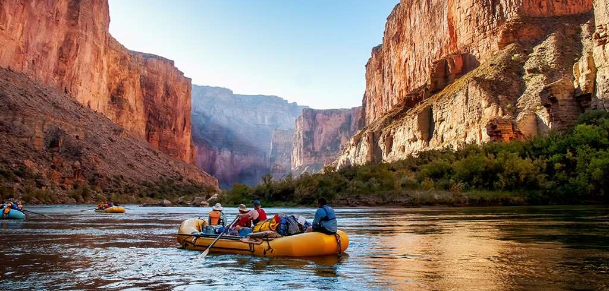
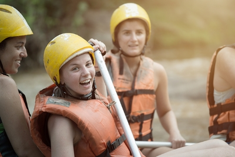
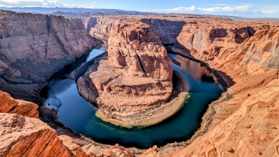

White water rafting is an adventurous outdoor activity that involves navigating through turbulent river rapids in an inflatable raft. Participants typically work together to paddle and maneuver the raft, facing varying degrees of difficulty based on the river’s class ratings. It's a thrilling way to experience nature, often surrounded by stunning landscapes. Safety gear, including helmets and life jackets, is essential for a safe experience. Join us at The Raft to have the adventure of your life!


The Raft
History
The Colorado River is a 1,450-mile waterway that flows from the Rocky Mountains in Colorado through several states, before reaching Mexico, with iconic landscapes like the Grand Canyon. In the late 19th and early 20th centuries, damming projects like the Hoover Dam transformed the river into a crucial source of hydroelectric power and irrigation. Today, the Colorado River faces challenges related to water scarcity and environmental sustainability, making it a key focus for conservation efforts and regionalnegotiations.
White water rafting is a popular activity on the Colorado River! The river offers various sections suitable for different skill levels, from gentle floats to thrilling Class V rapids. One of the most famous rafting areas is the Grand Canyon, where adventurous rafters can experience breathtaking scenery and challenging waters. Here at The Raft we give you an unforgettable, beautiful, and thrilling activity that you can do with your friends and family. Come visit us in Colorado, you will be blown away by the beauty of the canyon and have the most fun!